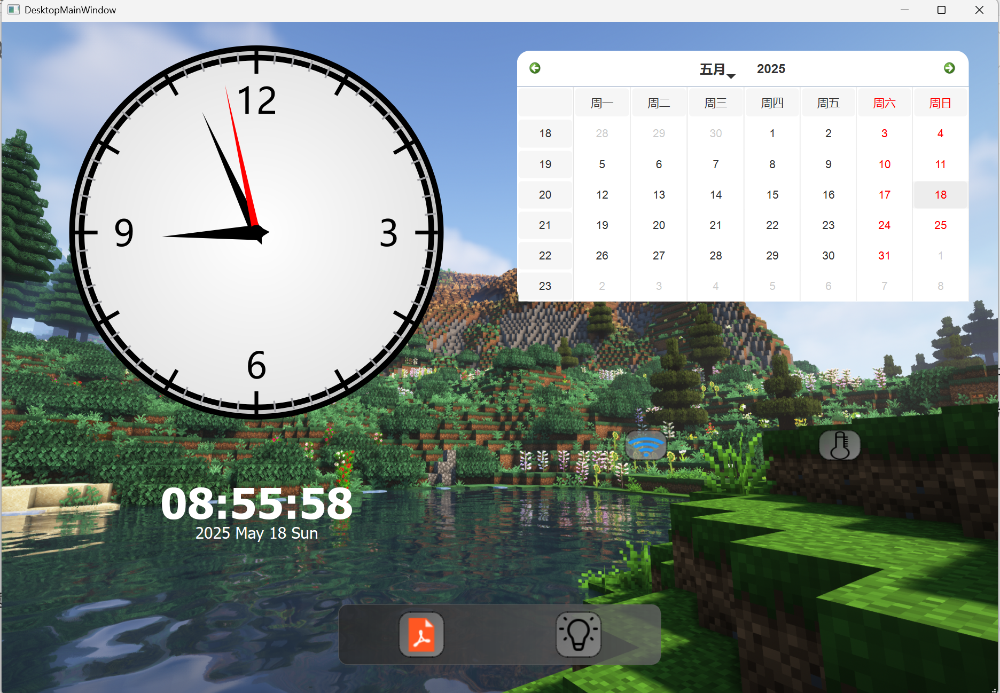
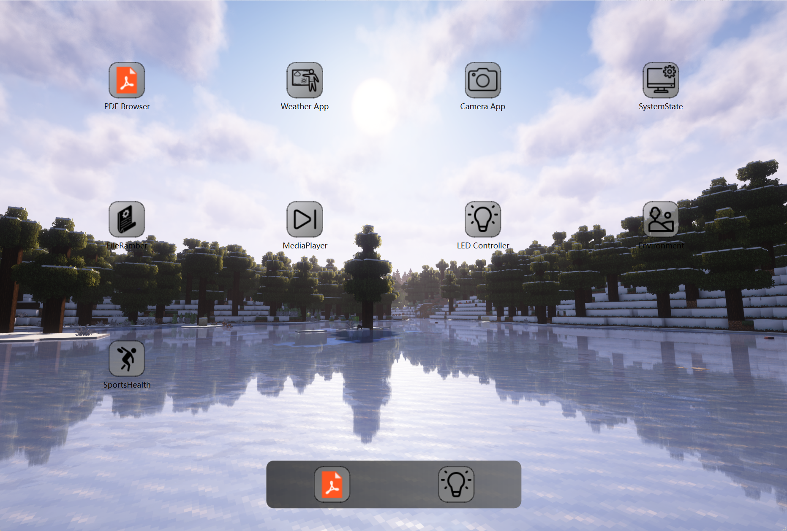

🔌 Hello! This is a simple desktop and utility collection that can be used in a variety of embedded devices! This project currently requires C++23 to compile (it's worth noting that you can compile with C++17, but any projects that require C++23 will need minor modifications)
🌐 Before you get started, choose your language! 🌐
🇬🇧 English Version | 🇨🇳 Chinese
🌟 Project Overview 🌟
CCIMXDESKTOP provides a lightweight, extensible desktop environment optimized for embedded systems based on the NXP i.MX6ULL platform. It includes a range of built-in tools, device integration layers, and built-in helper applications, all presented in a unified user interface.


Now, CCIMXDesktop supports one-click builds including:
- 🏠 Basic desktop environment and application abstraction
- 🏠 DockWidget that records click frequency and dynamically adjusts
- ℹ About App (a brief introduction to the basic situation of the desktop of this project)
- ✏️ CCNoter (super lightweight notepad)
- 🎨SimpleDrawer (super lightweight drawing, similar to Windows "Paint")
- 🔧 Builtin Apps (Indoor temperature requires that the ICM20608 driver has been mounted and is available. Other sensors need to modify the interface content by themselves (just rewrite how to read) and network degree detection (requires Qt Networks Core to be supported))
- ☀️ WeatherAPP (requires your device to be connected to the Internet to be available)
- 📄 pdfReader (requires you to have the dependent static library of mupdf on your platform)
- 📁 FileRamber (file browser, with basic file navigation, Tiny version of Windows Explorer.exe)
- 📷 GeneralLocalCamera (this is a basic camera based on Opencv VideoCapture, which can realize the photo function)
- 📊 SystemState (view the CPU status, memory capacity status and process list of the running machine)
- 🎵 MediaPlayer (requires your QMediaPlayer to support ALSA or other audio playback, video playback requires OpenCV support)
- 💡 LEDController App (switch light APP, requires Platform LED driver to be enabled)
- 🌡️ Environment App (AP3216C driver needs to be mounted)
- 🏃 SportHealth App (ICM20608 driver needs to be mounted)
- 🖼️ ImageWalker (the most basic image information browser, equivalent to the Windows image browser for beggars)
- ✏️ MarkDown reader (the most basic Markdown editing + preview function, supports draft/load and save Markdown and basic shortcut functions)
- 🛜 CCNetHelper (supports network card information viewing, IP port scanning and basic test IP connection capabilities)
- 🦖Dinasour Game! (Yes, that Google Dinasour Game, implemented with Qt6 Widgets :) )
- 🧮Caculator pocket calculator (standard calculator)
- 🤖ImageProcessor (image processor local processing image and simple reasoning (face recognition))
- ⚙ Settings (provides desktop wallpaper, brightness settings (not yet implemented on ARM platform) and AppWidget style settings)
Some running screenshots


🛠️ Technologies used to build the foundation


Building this project requires that you have completed the porting of Qt6 (the basic necessary porting includes TSLib for interaction, QtCore QtWidget QtGui three-piece set, QtNetwork and at least QtMultiMedia component support for ALSA audio playback). Please check whether your build is sufficient to support the building of this desktop and third-party applications!
🛠️ Technologies used for full build


- OpenCV for camera support and image transformation processing (if you don't use OpenCV image processing and any support for video streaming, you can not provide the library, but all related apps will be set to not build!)
- MuPDF (for PDF rendering) (these are used for PDF readers based on mupdf. If you don't want to build, you can ignore MuPDF dependencies and all related apps will be set to not build!)
🧩 Developer Reference
📚Project Documentation


If you are interested in the project production process and development documents, please refer to the Documentations folder. For the build process and customization, please refer to the build manual:
🛠️ How to build this project? (Supports X86 gcc, ARM-linux-gnueabihf-gcc and Windows GCC)
The document has been automatically deployed through GitHub Actions, visit: CCIMXDesktop: Main Page
💡 WIP (some WIP Third Party Apps under development)
- Dynamic APP loader (Dynamic Application Launcher)
💡 Future plans
🚀 Plan to write and provide more external basic programs:
- 💬 Chat room (planned to be similar to QQ)
- ⏰ Alarm clock APP
- 🔌 Serial port assistant
- ✅ Task list
📝 License

This project is based on the MIT license, and you are welcome to port, modify and use it at will!